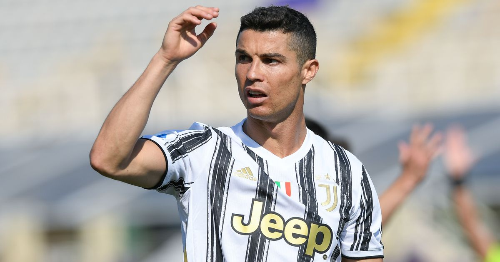

Juventus Dressing-Room Isolation — Shunned by Teammates
Isolation reports: According to La Gazzetta dello Sport, Ronaldo was isolated by teammates during his Juventus years, with dressing-room relations tense. The cause was that squad members generally felt the club had granted him excessive privileges and freedoms, undermining the existing team balance.
Privilege causes resentment: From a bespoke training plan and personal nutritionist to priority on post-match interviews and commercial events, Ronaldo's treatment at Juve far exceeded anyone else's. Veterans like Chiellini and Dybala were outwardly polite but in private had plenty of muttering about this pyramid with one man at the top.
Dybala's sacrifice: The most direct victim was Paulo Dybala. To make Ronaldo comfortable Juve had to reshape the system, forcing Dybala out of the core role and into a marginal position. The chemistry between the two was never more than lukewarm and the Argentine's talent was systematically wasted.
'All or Nothing' exposes it: The Amazon documentary 'All or Nothing' put the conflict on screen — Ronaldo swearing loudly at teammates in the dressing room, and clashing fiercely with Cuadrado on the pitch. These scenes confirmed that the 'hard to work with' label was no media invention.
Chiellini's awkwardness: As captain, Chiellini had to walk a tightrope between preserving Ronaldo's face and looking after the local players' feelings. After one AC Milan match a photo-op incident between him and Ronaldo further exposed the dressing-room's delicate power imbalance, the big brother reduced to a supporting role.
The collective cost: Ronaldo's personal numbers remained glittering, but Juventus could not break through in the Champions League and their Serie A dominance eroded year by year. When a team is built around a 'privileged island', collective combat power inevitably suffers — Juve's three-year experiment's bitterest lesson.